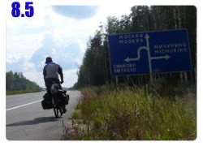
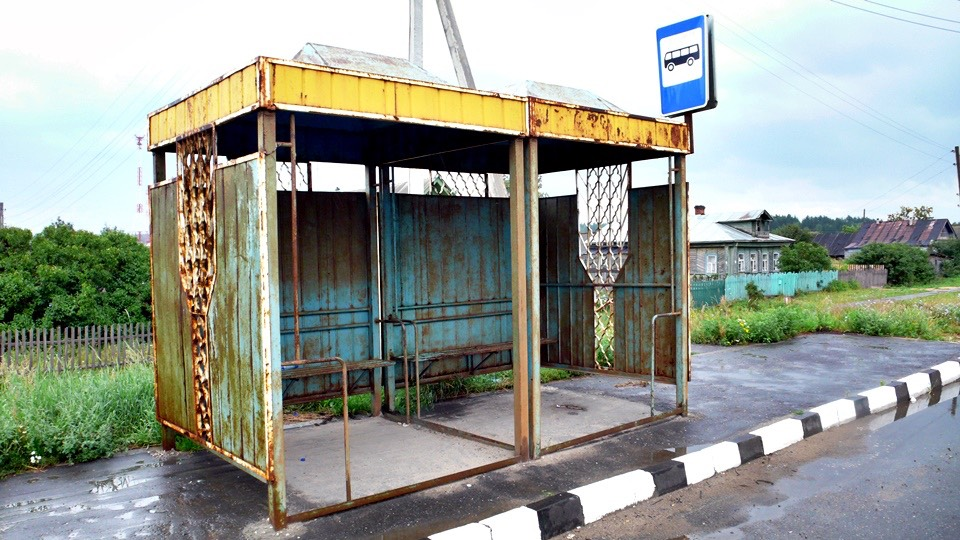

公車站中平整的水泥椅子加上充氣之後的睡墊鋪底，睡起來就像彈簧床一樣舒服，除了夜裡肚子痛爬起來大便之外，整個晚上超級好睡～
想不到睡在公車站也能有旅館般等級的睡眠享受，早上賴床稍微睡得晚一點。
早上六點零七分的時候第一班公車停靠，煞車聲將我叫醒，車上下來兩位乘客，好加在馬上就離開，沒有駐足觀看睡覺中的我。
這個站真的很冷清，萬一早上是在滿滿乘客聚集的公車站起床的話，那整個就糗大了。
起床後著裝收拾露營裝備，用水壺的水洗把臉，這些都已經是基本的日常作息之一，想不到露營也能變成習慣。
出國前的行前會，記者問我這次旅行會有幾天是露營的，當初我回答是大概五天左右吧...>"<
趁著一早好天氣，繼續往莫斯科移動～離開公車站往前走又是山坡路段。
這一段好幾百公里的路都鋪設地非常優良，雖然說是山路，可是路面平整，而且有兩個車道，外加連路肩都鋪設了柏油。
這樣一來我就可以騎在自己的車道上，減少了跟大卡車爭道的危險畫面。
今天很酷，有一輛大卡車在後面鳴我喇叭，一開始覺得好吵，路那麼大條我又沒礙到你，有什麼好叭的？
聽著喇叭聲發現是有旋律的，司機大叔用喇叭對我鳴了『愛的鼓勵』，當大卡車經過我的時候，舉起手來揮舞打招呼，大卡車也閃著雙黃燈問好。
依照慣例，早上出發之後要尋找的就是洗臉和吃飯的餐廳。
一大早路上的車輛還不是很多，放牧的牛群倒是不少，趁著早上車流不大比較好趕著在路上走吧，這些牛隻走過之後，馬路上全都是牛大便，邊騎車要邊閃。
一個小時左右就發現了適合的餐廳，開始全身擦澡、汗濕的比較嚴重的上衣也順便洗過。
早上都會在餐廳裡待上兩～三個小時，同時整理遊記和吃飯，利用這個時間可以將洗過的衣服披在門口的欄杆晾乾。
早午餐想說吃得隨便一點，點菜的時候一樣是亂點一通，當菜上桌的時候讓我整個驚呼了一下！
哇～一大早就吃牛排這麼高檔～配上造形很可愛的通心粉，香醇的咖啡以及可口的麵包，這是為了彌補這陣子都露營的佳餚嗎？
本來以為送上來的只是一些煎蛋或是馬鈴薯泥，結果是一盤光是用看的口水就直流的大餐。
當下立刻闔上電腦螢幕，管它遊記寫完了沒，不好好地專心享受這頓美食，實在對不起自己。
也和以往一樣，離開餐廳的時候是中午時分，每天的模式都差不多，雖然很想試著打破這樣的慣例，但不住旅館的話，白天就得找地方寫遊記。
過了中午才騎車，一天要騎上一百公里路的話，大多都要騎到晚上八點左右，好像宿命一般的旅行模式，明明就那麼早起，可是卻不能早一點休息。
路邊擺著木頭架子，掛了幾串藥草類的東西在販賣，沿路也很常看到有人停車然後下車去森林裡面拔了一堆草，不知道這些東西有什麼療效？
然後一整天就是在上坡和下坡中流汗和快意奔馳，其實沒有迪馬說的那麼難騎，要是腳力還過得去的話，這段路算不上什麼的。
路邊都是田地或是草原，蟋蟀、蚱蜢這些昆蟲很多，偶爾有幾隻會跳上包包，以前都會拍走，今天心情比較好，讓你搭順風車～
天空的雲層很多，一團一團的雲佔據了七成以上的天空，白白的雲看起來沒什麼威脅性，只要別出現烏雲就是老天保佑了。
越接近莫斯科，感覺鐵路越來越常看見，爬了一些上坡的陸橋，以為是要過河，結果都是在跨越鐵路。
這些鐵路開設的方式就像拿一把大刀將森林給劃開一樣，茂密的森林因鐵道而分開。
下午在商店買一盒果汁和兩個冰淇淋當點心，要是還有什麼口味的果汁這陣子是還沒喝過的，我還真想見識一下。
冰淇淋很好吃，有時候還可以看到巧克力、草莓、咖啡這些口味，價錢都是俗啦～
一次買兩個，一手拿一個左右開弓地吃了起來，要是每天都能夠買到冰淇淋的話，那騎車就不怎麼累了。
這是在路旁休息的時候看見的植物，沿著道路長了一大堆，看起來好像燒焦的熱狗。
在商店裡也常看見冰箱中放了很多乳酪和香腸類的食品，香腸的種類很多，要是不需要烹飪就可以直接吃的話那還真想買兩根解嘴饞。
山區的氣候變化很快，早上看還是好好的天氣，一轉眼就是烏雲密布，一眨眼就下起大雨。
看到烏雲的時候心裡才想著拜託別下雨，等我離開山區再下，三十秒後雨就無情地嘩啦啦落下。
想閃避也沒地方可以躲雨，淋雨騎車也變成家常便飯了，既然停下車也是淋雨，那當然是冒著雨前進，看能不能找到躲雨的地方。
公車站這時候偏偏就不出現，十五分鐘之後淋得濕答答，這時候才跑出一個公車站來，裡面地上是乾的，剛才要是能避在這邊該多好？

『太慢了啦～！』對著公車站大喊。
另一條開闢森林建設的鐵路，我很喜歡火車，光是用眼睛看就非常有旅行的感覺，常常看著～心就被駛過的火車給載走。
下過雨之後馬上又變成藍天白雲，抬頭仰望天空，老天爺我真是摸不透你呀。
這陣子騎車很單純，看到指著莫斯科的箭頭，就往那個方向走就對了，七月底的時候距離莫斯科還有九百公里，
那時候稍微估算了一下，如果每天騎一百公里出頭，那大概七～八天就可以抵達莫斯科，比當初預估的時間還快上四天。
多出來的這段時間是要在莫斯科辦理烏克蘭簽證用的，不知道申請簽證要多久？所以能夠早一點到莫斯科總是好事。
為了不延遲抵達，每天真的都乖乖地騎上一百公里才休息，今天出發的時候距離莫斯科還有三百三十幾公里。
大概是三天的路程，突然想拼命一下，要是今天可以騎遠一點，那明天也趕路拼點距離，兩天搞不好就能夠抵達。
所以今天騎車還挺努力的，雖然中午才正式出發，但一整天下來也騎了一百八十公里，這可是騎到晚上十一點所換來的成果。
距離莫斯科則剩下大約一百六十公里，隔天再拼一下就能抵達莫斯科，到微星的員工宿舍去享福啦～
網路、熱水澡、柔軟的床鋪，更好的是這些都是免費的，微星這次的贊助實在很夠意思，讓我更迫不及待地想早點到。
這雲整個也太大了一點吧，又這麼低，看起來就是會垮下來壓扁萬物的感覺，這種規模的大雲，說裡面隱藏著天空之城我都相信。
騎車的時候呀，腦袋都會想很多有的沒的東西，光是用哪些小叮噹的道具可以讓旅行輕鬆一點，我就已經想了大半個月了。
晚餐的時間已經到了，但是沒看到有餐廳的影子，今天也不想住旅館，反正順利的話明天就能夠到莫斯科，幹嘛浪費這個錢。
在餐廳擦澡已經變成保持乾淨的主要方式，完全取代在旅館洗澡的功能。吃熱食則沒地方能取代，快到用餐時間的時候都期盼著等等能吃什麼大餐？
在正餐和正餐之間的時間就是不停地啃便宜麵包、吃廉價糖果、喝水壺裡的自來水來充飢，這樣的好處是等一下吃大餐的時候會有不枉此生的感覺。
好不容易看見了餐廳的告示牌，同時代表可以擦個澡和吃頓美食。
餐廳的外觀有點過於豪華，菜單上的價錢則還過得去，可是怎麼也找不到洗手台，問服務生哪邊可以洗把臉，居然搖頭跟我說沒有。
沒有就算了，反正身上不怎麼髒，那就吃飯吧，語言不通要點餐根本就不是多大的問題，只要拿出錢，想吃什麼都可以搞定。
點過餐之後，服務生拿了一隻鑰匙給我，這要幹嘛？
他比著一個鎖上的門，說那邊打開就是廁所和洗手台。
哇咧～外表這麼豪華，裡頭居然是小氣鬼餐廳，連想洗把臉都還要先點餐消費才可以，在等待美食上桌之前就去豪華的廁所擦澡。
隨便亂點的晚餐也是豪華的驚人，金黃炸薯條、醃製高麗菜、嫩煎豬排配上磨菇和番茄的焗烤，一樣有熱咖啡以及麵包當附餐。
醃製高麗菜吃起來就是台灣臭豆腐會配的那種泡菜口味，薯條非常好吃，外酥內軟，焗烤的起司和蘑菇很美味，主菜的豬排煎得恰到好處，整盤真是極品組合。
今天的兩頓飯都吃得很高級，因為不住旅館的緣故，總計起來的花費卻是很省，一天還不到五百盧布，這個錢可能還住不起一晚旅館。
之前騎單車環法，每天的開銷一半以上都是花在住旅館，現在省下來的錢就能夠吃大餐，我是美食主義者，睡覺隨便一點沒關係，不要被螞蟻搬走就好了。
吃飽後就上路吧，距離太陽下山還有一個多小時，還能騎上一段距離，俄羅斯的道路告示牌很不錯，什麼樣的牌子都有，唯獨沒有禁行腳踏車。
不是我在抱怨，文明又進步的法國，禁行自行車的牌子簡直插滿了整個國家的道路，兩年前在法國騎車旅行讓我非常賭爛。
一度還想寫信跟法國總理反映這個問題，過了兩年不知道這些牌子的數量是增加還是拆掉了一些，讓自行車多一點通行的空間。
洗過澡之後只穿了短褲和外套，長褲以及上衣都脫下來，這樣子騎車真是超舒服的～涼快得很。
長褲實在稍嫌悶熱了點，可是它這一百多天以來幫我遮擋了烈日、蚊蟲、灰塵、污水和大大小小的各式碰撞，寒冷的時候又能保暖，功勞還是大於不便。
里程距離還有七～八百公里時不會有這樣的衝勁，因為還很遠，現在距離只剩下一百多公里，如果明天也是如計劃中般只騎一百公里出頭，
那就會在距離莫斯科六十幾公里的地方落腳，明明就近在眼前卻要晚一天才能抵達，實在令人心癢難受，肯定會拼老命夜騎過去。
既然到時候會這麼拼命，不如現在先分擔一點明天的辛苦。
遊戲的規則很簡單，今天多趕一點路，明天就可以少騎一點；今天晚一點休息，明天就可以早一點抵達，目前距離還有一百六十九公里，衝呀！
太陽下山了，揮手說掰掰，夕陽好漂亮，旅行之後我才知道原來太陽沒入地平線之後不會馬上就天黑，還有一小時的日光時間。
這陣子露營的場所重複得我自己都覺得很老梗，橋下、空屋、公車站都已經睡了一次以上，今天想找一點不一樣的露營場所。
田野小徑中發現這一棟房屋，和之前睡的空屋不一樣，這不是水泥蓋的，而是木頭房子，而且整棟因為火災燒掉了。
睡在這樣的地方總算有新鮮感了吧，待我進去瞧瞧適不適合過夜。
裡面有些嚇人，這場火實在燒得很猛烈，天花板塌陷、傢俱付之一炬、地面沒有乾淨的地方，全都是大火燒過後的焦炭。
在裡面四處查看的時候心裡很害怕會不會看到什麼人形的燒焦物，外觀看起來還不怎麼糟，裡面實在燒得很徹底，不能住，找下一個地方。
晚上大概十一點半左右，天色開始暗了下來，之前一直很想找二十四小時營業的餐廳待一整個晚上，今天就來實行吧。
找一間很大的餐廳，裡面很乾淨、生意很冷清、裡面的阿姨很親切，我到的時候她們正在玩著報紙的填字遊戲。
點了一杯咖啡之後，明白地跟她們說我要在餐廳裡面待一整個晚上可以嗎？
她們說為什麼不可以，這邊本來就是二十四小時不休息的，隨便我要待多久都沒問題。
一杯咖啡，我付了二十盧布，不用找了，就當作讓我待一整個晚上的住宿費吧。
餐廳裡面很大，有位女員工會說英文，因為她之前在泰國待了一年，親切的她主動問我小多放在外面不太好吧，要不要牽進來裡頭比較安全？
就這麼幸運地小多也可以和我一起待在餐廳中的更衣間，不用在外頭受風寒，我也不用擔心小多半夜會被偷走。
二十四小時營業的餐廳有方便的電力供應，今天睡前就可以將遊記給整理好，這樣明天就不用花時間補寫。
睡醒後一整天都可以專心的騎車，好興奮呀～在橫跨過哈薩克和俄羅斯之後，終於快要抵達第二個補給點－莫斯科～我來了！
繼續閱讀：8.6 藍白拖踩進莫斯科
俄羅斯-盧布－ 1：1.3 台幣
8.5
總計：461元
豐盛的早午餐牛排配通心麵、咖啡、麵包126元、商店綜合果汁、冰淇淋二個55元、小氣鬼餐廳的美味晚餐焗烤豬排、炸薯條、咖啡、麵包220元、趕路的可樂40元、熬夜一整晚的咖啡20元